把 VS Code 变成
顺手的 Markdown 编辑器
所见即所得编辑、斜杠菜单、自研画板、整篇网页存回 .md、一键导出 PDF、网页与长图、复制跟预览一个样——写文档不再在源码和预览之间来回横跳。
## 本周计划 > [!NOTE] > 💡 提示卡片 · 直接渲染，存下原样还原 - [ ] 把画板导图结构补齐 - [ ] 导出 PDF 的书签树回归 - [x] 斜杠菜单接上 /画板
标准 Markdown · 换任何编辑器都照样能打开
本周计划
> [!NOTE] 直接渲染，存下原样还原- ▣画板 — 流程图 · 思维导图 · 便签Block
- ≡无序列表Block
- 1.有序列表Block
- ▦表格（3×3）Block
Ctrl + B 加粗 · Ctrl + F 查找替换 · Tab 表格跳格
本周计划
- ○把画板导图结构补齐
- ○导出 PDF 的书签树回归
- ◉斜杠菜单接上 /画板
只读预览 · 切回「所见即所得」继续写
这些瞬间，写过文档的人都懂
Markdown 的问题是它太朴素——所有麻烦都得写字的人自己扛。
闭眼写，睁眼验
符号敲下去看不见效果，加粗有没有闭合、表格有没有断列，全靠切预览确认。
表格靠手对齐
竖线一格一格对，单元格里的竖线还得转义；改一个字整行列对齐全乱。
贴一张图的链式动作
截图 → 存文件 → 起名 → 挪进目录 → 写相对路径 → 刷新看渲染。
发出去就掉格式
粘给同事的 Word / 飞书 / 语雀，标题、表格、代码块的样式碎了一地。
长文档没有侧栏
需求文档几十页，交给别人只能通读——没有书签树，也没有分级目录。
图是外来户
流程图、思维导图只能外链画图网站画完截图插回来，改一次线就得走一遍全流程。
八个理由，换掉你的 Markdown 工作流
上面每一条痛点，都对应到这里的某个能力。
所见即所得，源码不失身
源码 / 所见即所得 / 只读预览三视图随时切换，编辑自动存进 .md。敲 #空格 变标题，块手柄拖拽排序，所有操作一步可撤销。
斜杠菜单
25 种基础块输入即得：表格、代码块、提示卡片、折叠块、日期、脚注、状态徽章……支持上下文操作（表格加行加列、列表互转）、输入过滤、最近使用。
自研画板
文档里 /画板 拖拽成图：流程图、思维导图、泳道、便签同板共存。思维导图 12 档结构，含做因果分析的鱼骨图，小节可一键长成导图，导图能倒回大纲，连线自动绕障。整板可出图为 PNG、矢量 PDF 或 SVG，保存后文档内即时显示，双击回来接着画。左侧 模板库 备着十套成品画板，换模板整板替换一步撤销。
一键导出 PDF、网页与长图
A4 版式，标题自动生成侧边栏书签树，长文档翻阅不愁。公式、图表、代码块高亮原样进 PDF。也能导成带目录的单文件网页，公式与图表一并写进这一个文件，发给谁都是打开就能看。要发朋友圈、小红书这类只吃图的地方，整篇还能出成一张长图，或按内容切成多张——刀口只落在段落之间，不会把一段文字或一张图劈开。
怕丢的网页，拉回本地存成 .md
命令面板贴一个网址，整篇抓下来存进当前目录：图片落到 image/、代码块保住原来的语言、标题层级不塌。书签会死、链接会 404，存下来的这一份不会——全文搜索搜得到，笔记库里链得过去。只请求那一个网址，不经任何第三方中转。
复制跟预览一个样
清单按层带 • ○ ▪、有序列表序号照旧；粘到 Word / WPS / 飞书 / 语雀 是原生列表，粘到 Excel 缩进不丢。跨工具协作不再需要重排版。
公众号排版台
手写稿粘进公众号不再掉版式：六套主题、字号行距可调、电脑与手机两档预览就是发布后的样子。标题、作者、摘要的字数上限当场量给你看，配好公众号凭据还能一键存进草稿箱，同一篇再存覆盖那一份。
公式与图表全支持
KaTeX 本地渲染行内/块级公式，点击退回 LaTeX 就地改；mermaid 代码块预览即成流程图，切回编辑仍是源码。
不看插画，看真图
下面四张都截自扩展在 VS Code 里的实际界面。
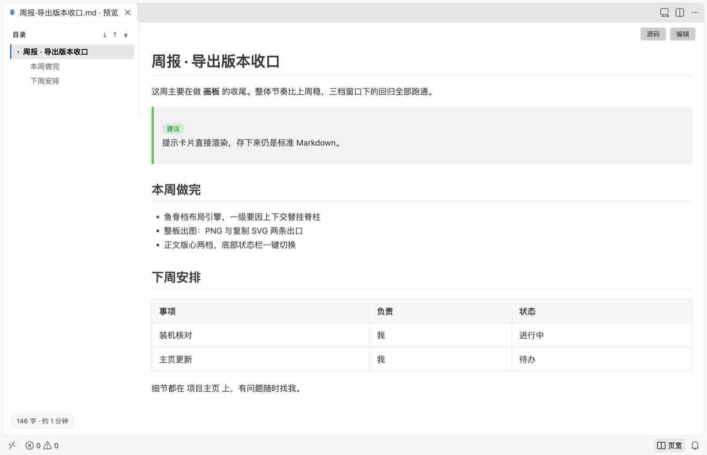
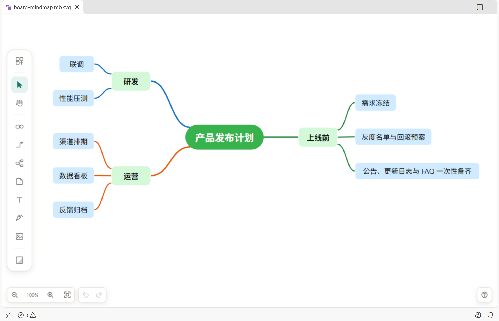
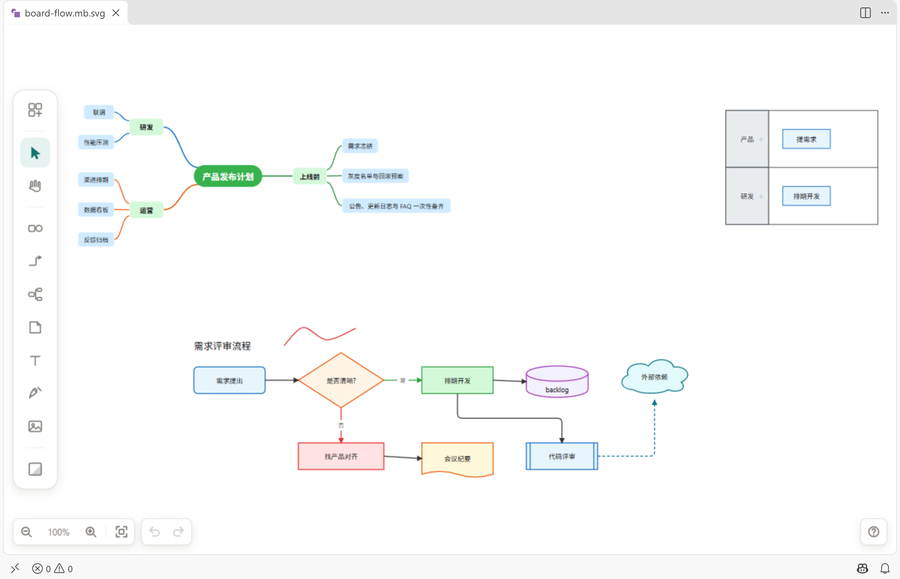
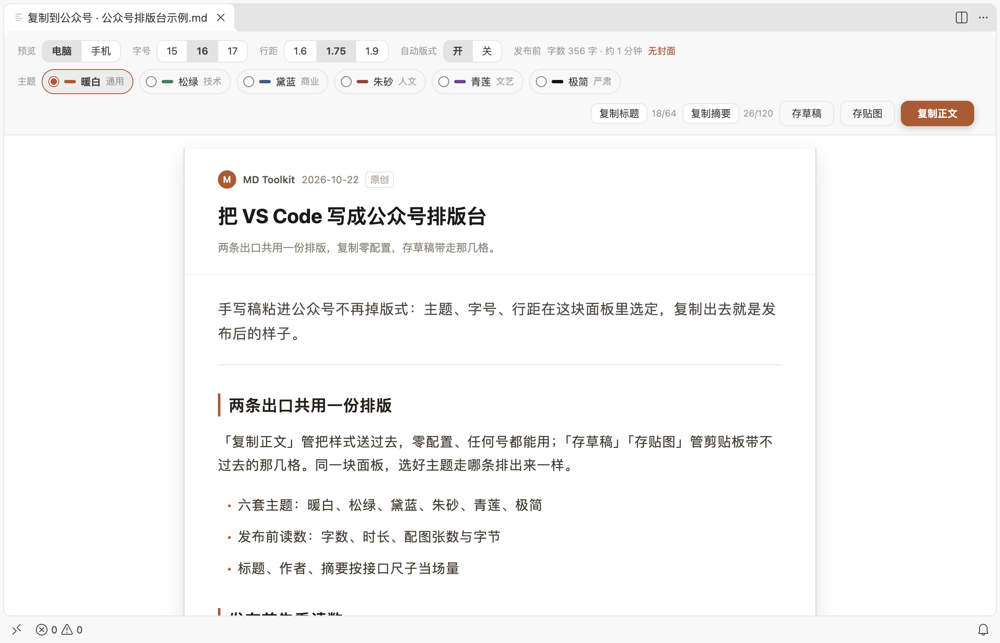
十套成品画板，套上就能改
会议纪要、流程、组织架构、里程碑、产品排期、鱼骨复盘、交付泳道、跨部门流程、平台应用架构，到 UML 时序图——新建时直接选，已有画板从左侧「模板库」整套替换，一步撤销。
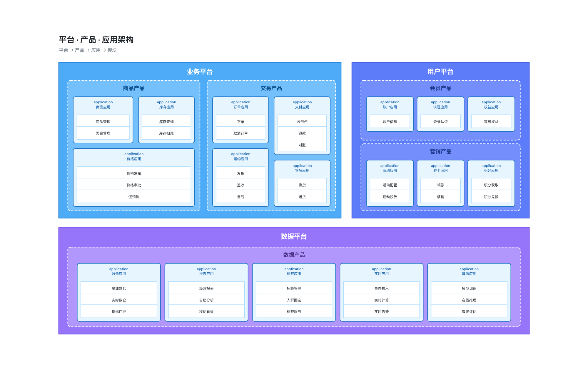
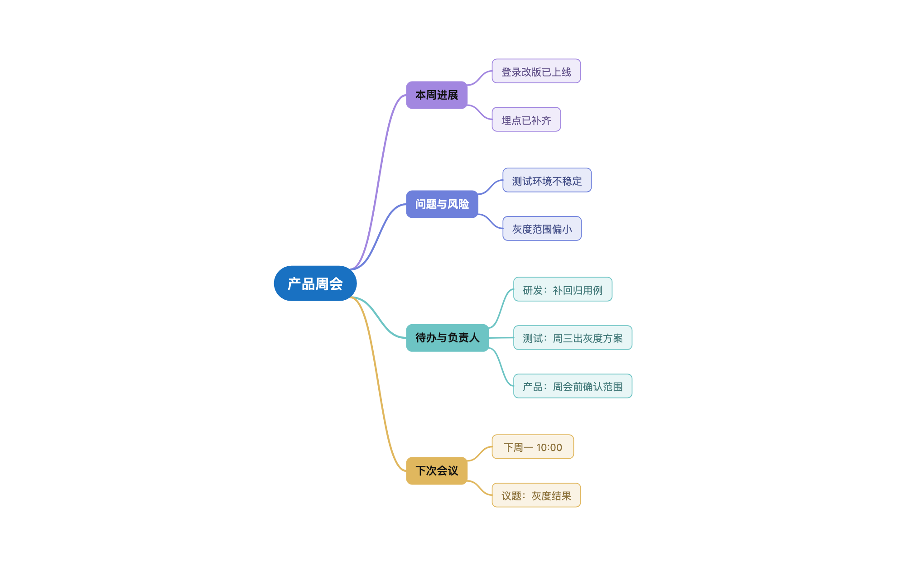
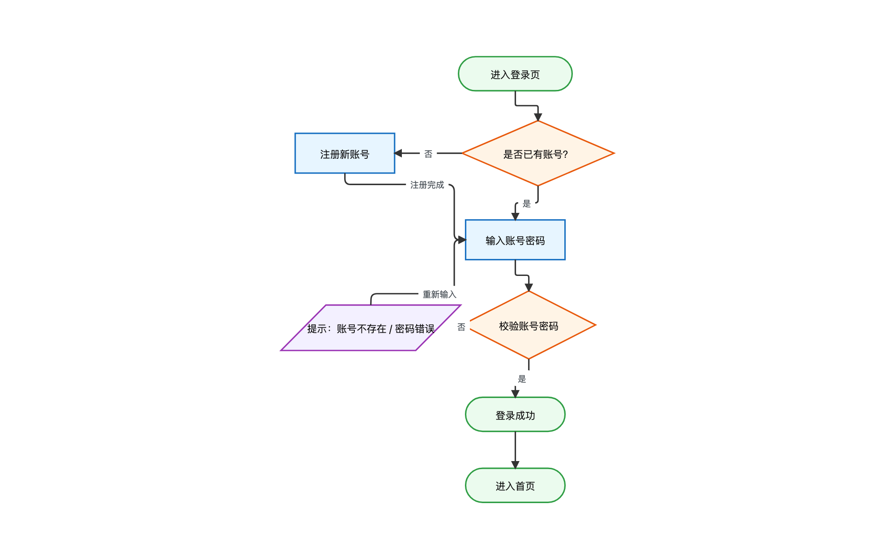
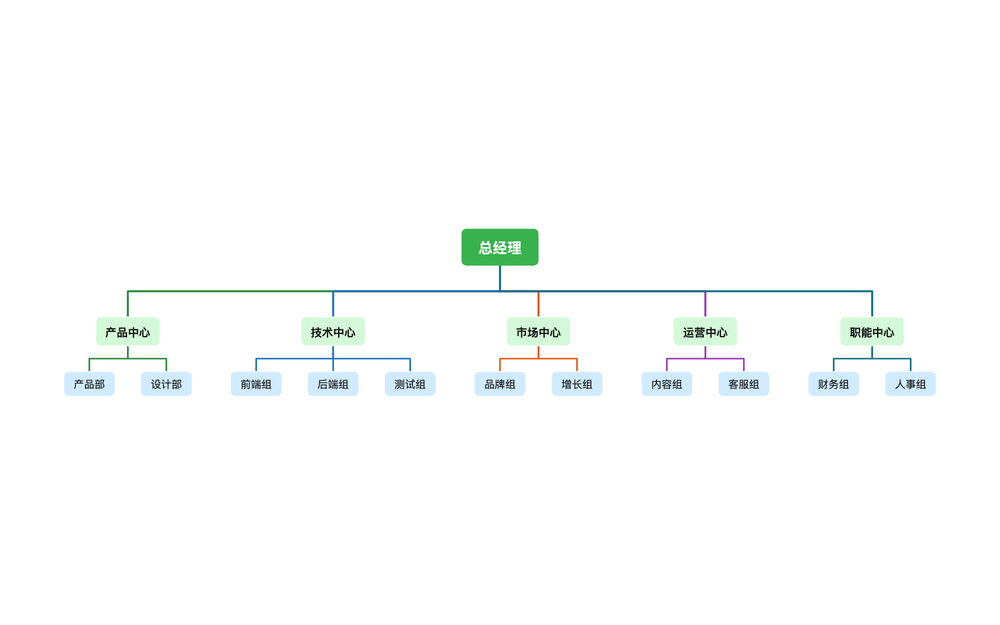
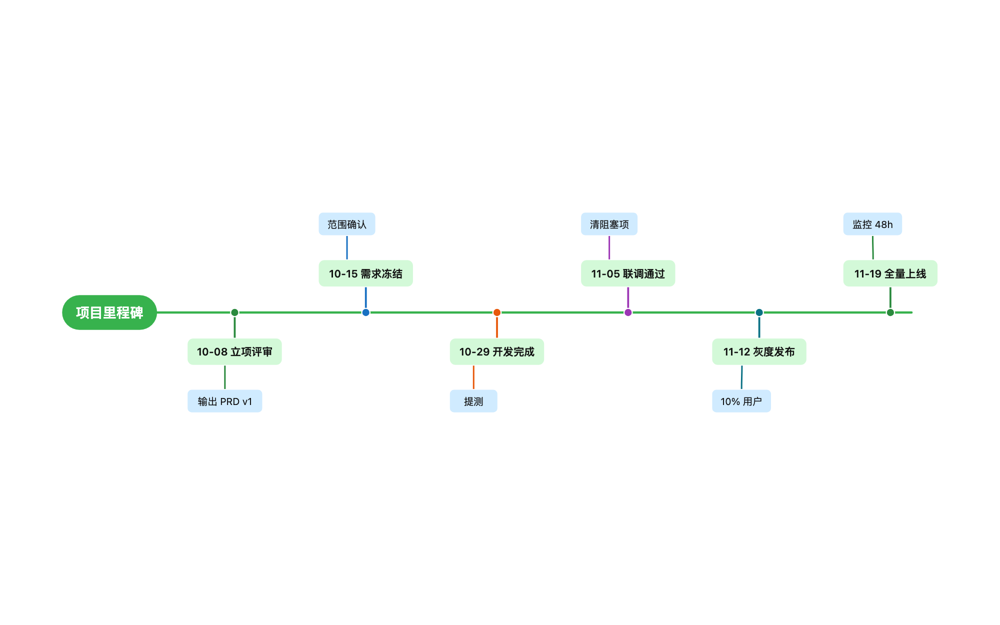
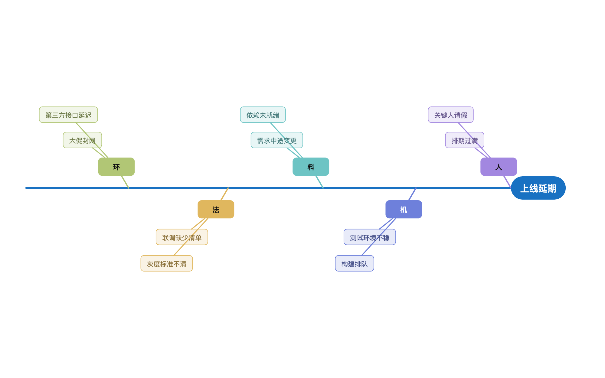
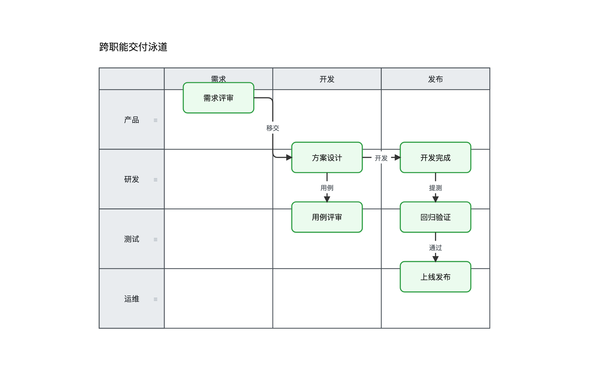
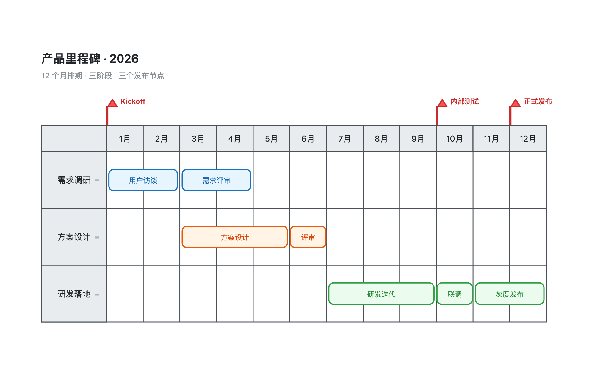
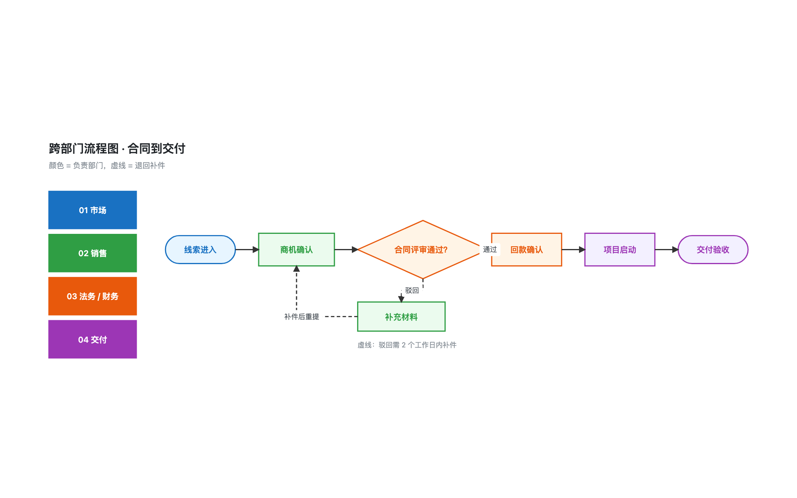
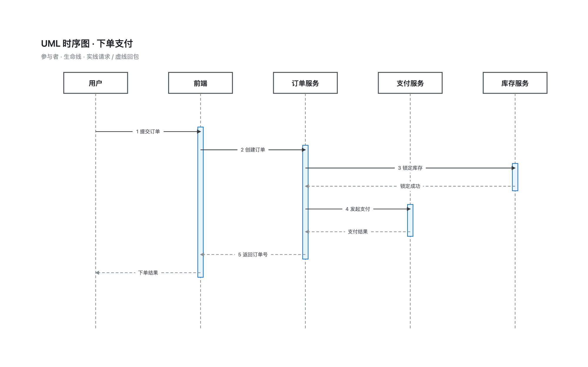
为什么不用现成的插件
VS Code 的 Markdown 插件已经很多了。这三条追问，是这个扩展存在的理由。
多装几个现成插件，不行吗？
常见做法是预览增强加一个、快捷键加一个、画图加一个、导出加一个，一串扩展拼成一个能用的编辑器。可每个插件都只改自己那视图：同一段文字，编辑器里敲的键、预览里看到的效果、导出时选的版式，出自三套互不相干的实现，行为对不齐、快捷键撞车是常态——拼起来仍是一张缝合桌面。
直接上所见即所得，不就完了？
前提别搞反：文件还是标准 .md。存不进 .md 的编辑，等于把一个钉子户请进仓库——git diff 读不出、别人打开不了、想换工具换不走。MD Toolkit 的取舍是编辑态做足手感，落笔仍然逐字存成 Markdown，切回源码视图就该是什么是什么。
这些需求，上游什么时候补？
画板、带书签树的 A4 PDF、粘贴截图自动存图、中文输入法组合期避让、复制进 Word 保留层级——每一条单拎出来都是几周工程量，任何一款现成插件都没有理由为别人家的那份文档去做。它们不是缺一个 PR 的小缺口，是几套互不相让的实现，塞不进同一个扩展。
自研，是为了把一整条链握在同一只手里：编辑手感、渲染、存盘、画板、导出、剪贴板，一次改完全链都跟着对齐。 于是你拿到的是这些——
- 自研画板：流程图 / 思维导图直接画在 .md 里
- 所见即所得：编辑完存下的还是标准 Markdown
- 复制跟预览一个样：进 Word / 飞书 / 语雀仍是原生列表
- 带书签树 PDF：长文档导出可翻阅
- 单文件网页：正文带目录导出，浏览器直接打开
- 长图导出：整篇一张或按内容切成多张
- 网页导入：贴个网址，整篇存成能改的 .md
- 公众号排版：六套主题、复制正文或存进草稿箱
- 画板出图：整板存 PNG、矢量 PDF 或复制 SVG
- 中文场景优先：输入法不打断、按字统计
- 全本地离线：不上传内容、不依赖外部服务
30+ 处细节，都在手感上
更新日志
最近三版如下，完整记录在更新日志页。
- 0.5.0把一个 Markdown 文件夹变成可浏览、可搜索、可换主题的静态站点。新增
- 文件夹一键生成静态站点：递归扫描 Markdown，自动生成导航树、每页目录与客户端搜索，公式和图表沿用编辑器渲染
- 文件夹右键直接生成；命令面板运行时弹出文件夹选择，取消不报错
- 四套主题（暖白、冷白、暗、护眼绿）与切换器，默认跟随系统明暗，手动选择记忆
- 文档站三栏排布：左导航当前页高亮，右置本页目录随滚动高亮、不截断，正文放宽
- 搜索支持多词顺序不限与不连续字符的模糊匹配
- 命令 md-toolkit.buildSite 支持 source/destination/overwrite，可脚本化指定输入输出；默认生成到源目录的 _site
修复- 修复双击直开（file://）时搜索无反应的问题
- 修复子页搜索结果链接指向错误目录的问题
- 0.4.6本轮修复五处问题，并把打字机开关移到状态栏。修复
- 修复打开外部文档时其中的脚本可能被执行的安全问题
- 修复图片和链接地址在格式化或保存后被改写的问题
- 修复用 Windows 换行格式的画板文件保存后反复整板重载的问题
- 修复部分文档的 frontmatter 在编辑后多出空行的问题
- 修复画板折叠组导出时丢失成员和连线的问题
优化- 打字机开关移到状态栏，只在编辑时出现
- 0.4.5画板这轮补齐了上手引导、文字编辑、分支标签与视口记忆。新增
- 便签与自由文字改为 Enter 换行，Ctrl/Cmd+Enter 完成
- 编辑框随内容增高，下方显示换行、完成与取消提示
- 判断框出线后可直接选是、否或自定义标签，已有一条时默认另一半
- 形状面板显示最近使用与悬停名称
- 空板时形状钮带高亮引导
- 画板按文件记住上次视口，重新打开回到原位
- 大板在小窗首次打开保持可读缩放，矮窗工具条分两列显示全部工具
修复- 修复缩略导航点按或拖动时画布往反方向跳的问题
- 修复缩略导航全览时当前位置框显示不全的问题
- 修复判断框手标一条是/否后，另一条丢失自动标签的问题
- 修复矮窗口首次打开时内容可能被工具条挤出视口的问题
三分钟上手
安装扩展
在 VS Code 扩展面板搜索 MD Toolkit，或直接打开 Marketplace 页面点 Install，也可用下方命令。
打开任意 .md
点编辑器右上角按钮，以所见即所得模式打开现有文档。
敲一个 /
唤出斜杠菜单，从 25 种块开始，包括 /画板。
code --install-extension gmsy.md-toolkit
免费使用 · 数据全在本地 · 支持 Windows / macOS / Linux
项目在持续更新，遇到 bug 或有想要的能力，欢迎到 问题反馈 提 issue。
如果它帮你省下了排版时间
MD Toolkit 是个人项目，免费使用、不接广告、不上传任何数据。如果它让你的文档写得顺一点，欢迎扫个码请作者喝杯咖啡——这是把这个项目继续做下去最直接的鼓励。
新主题、排版技巧与更新说明首发于公众号「顾明同学」，功能需求与反馈也欢迎到那里提。